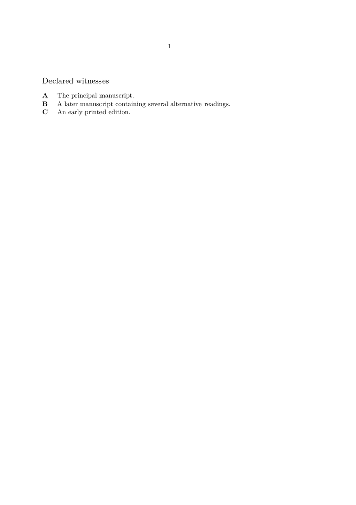

🚧 Under construction — This page and its subpages are currently being revised. Contributions are welcome: feel free to edit and improve them.
Guide 2 of 6 — Declaring witnesses in TEI critical editions
Previous Guide 1: Understanding TEI documents for critical editions · Collection overview · Glossary · Next to Guide 3 : Encoding a basic critical apparatus in TEI
What you will build in this guide
Guide 1 ended with a minimal TEI document:
TEI
├── teiHeader
│ └── fileDesc
│ └── sourceDesc
└── text
└── body
└── p [xml:id="p1"]
Guide 2 keeps that structure and adds a registry of three textual witnesses:
TEI
├── teiHeader
│ └── fileDesc
│ └── sourceDesc
│ └── listWit
│ ├── witness A
│ ├── witness B
│ └── witness C
└── text
└── body
└── p [xml:id="p1"]
You will then use ConTeXt to retrieve the reader-facing labels and descriptions of those witnesses.
No apparatus entry is encoded yet. Guide 3 will use the witness identities created here.
Contents
-
1
Declaring witnesses in TEI critical editions
- 1.1 1. Where this guide fits in the collection
- 1.2 Part I — Declare the witnesses
- 1.3 2. What is a textual witness?
- 1.4 3. The central model: declare once, refer many times
- 1.5 4. Build the witness registry
- 1.6 Part II — Identity and references
- 1.7 5. Anatomy of a witness declaration
- 1.8 6. How apparatus references will use the registry
- 1.9 Part III — Check and process the registry
- 1.10 7. Check the witness registry
- 1.11 8. Inspect the witness registry with ConTeXt
- 1.12 Part IV — Further considerations for larger projects
- 1.13 9. Identity, type, description, grouping, and order
- 1.14 10. What you have built
- 1.15 11. Continue with Guide 3
- 1.16 Related pages
A critical edition depends on identifiable textual evidence. Before an apparatus can say that one source reads
mind
while another reads
soul
the sources themselves must be declared in a form that later apparatus entries can reference consistently.
This guide therefore concentrates on one principle:
DECLARE ONCE
│
▼
GIVE A STABLE IDENTITY
│
▼
REFERENCE WHEN NEEDED
How to read this diagram. The witness description is stored once. A later reading does not repeat that description; it points back to the witness through its stable identifier.
1. Where this guide fits in the collection
The six guides construct one progressively richer scholarly source. The following cumulative map deliberately repeats structures introduced in Guide 1: the repetition helps the reader see what remains stable and what Guide 2 adds.
GUIDE 1
basic TEI document
TEI
├── teiHeader
│ └── sourceDesc
└── text
└── body
└── p [xml:id="p1"]
│
▼
GUIDE 2 ← YOU ARE HERE
add witness declarations
TEI
├── teiHeader
│ └── sourceDesc
│ └── listWit
│ ├── witness A
│ ├── witness B
│ └── witness C
└── text
└── body
└── p [xml:id="p1"]
│
▼
GUIDE 3
add basic apparatus relations
app / lem / rdg / @wit
│
▼
GUIDE 4
add complex textual variation
omissions / corrections / conjectures / groups
│
▼
GUIDE 5
process and validate encoded relations
Lua where additional processing is useful
│
▼
GUIDE 6
compose the scholarly page with ConTeXt
How to read this diagram. Guide 2 does not replace the document created in Guide 1. It enriches the documentary branch of that same TEI structure. Guide 3 will then use the identities created here to connect textual readings with the witnesses that support them.
Stage reached. We know the task of Guide 2: add a stable witness registry while leaving the textual branch essentially unchanged.
Part I — Declare the witnesses
2. What is a textual witness?
2.1. The basic idea
A witness is an identifiable source that preserves or transmits a form of the text.
Depending on the project, a witness may be:
- a manuscript;
- a printed edition;
- a papyrus;
- an inscription;
- a typescript;
- an authorial draft;
- a historical transcription;
- a quotation in another work;
- an early translation;
- another identifiable textual source.
Suppose our sentence survives in three sources:
A The mind seeks unity. B The soul seeks unity. C The mind desires unity.
The textual situation can be visualised as:
textual tradition
│
+-----------+-----------+
│ │ │
▼ ▼ ▼
witness A witness B witness C
│ │ │
▼ ▼ ▼
mind soul mind
seeks seeks desires
unity unity unity
How to read this diagram. The three sources transmit related but not identical forms of the sentence. Guide 2 identifies the three witnesses. The comparison of their readings belongs to Guides 3 and 4.
2.2. Source, witness, and edited text
The terms are related, but they are not automatic synonyms.
| Term | Meaning in these guides |
|---|---|
| Source | Material from which textual or editorial information is derived |
| Witness | An identifiable source preserving or transmitting a form of the text |
| Edited text | The text established and presented by the editor |
| Critical edition | The scholarly publication containing the edited text and its documentation |
A printed book may function as a witness if its readings form part of the textual comparison.
A modern critical edition might instead be used only as a secondary scholarly source. The role depends on the editorial model.
Do not confuse source and witness. A source becomes a witness in this workflow when the project treats it as an identifiable transmitter of textual readings. The category is therefore partly determined by editorial practice.
Further reference.
For the vocabulary used here, see the Glossary.
For the TEI model of textual witnesses and variant readings, consult the TEI P5 chapter Critical Apparatus.
3. The central model: declare once, refer many times
This is the most important concept in Guide 2.
A witness is described once. Later parts of the TEI source refer back to that declaration.
3.1. Declaration
A witness declaration creates an identifiable documentary object:
<witness xml:id="ms-A" n="A"> The principal manuscript. </witness>
For this tutorial, the declaration stores:
stable TEI identifier: ms-A reader-facing label: A description: The principal manuscript.
The distinction between the first two lines will be examined more closely in Section 5.
3.2. Reference
A later apparatus entry will be able to point to the declaration:
wit="#ms-A"
The relation is:
DECLARATION
stored once in header
<witness xml:id="ms-A" n="A">
The principal manuscript.
</witness>
│
│ stable target
│
+---------+---------+---------+
│ │ │
▼ ▼ ▼
reference 1 reference 2 reference 3
wit="#ms-A" wit="#ms-A" wit="#ms-A"
How to read this diagram. The declaration is the stable source of identity and descriptive information. Repeated apparatus entries can point to that identity without copying the witness metadata each time.
Or, more compactly:
DECLARE ONCE
│
└──────────────────────► REFERENCE MANY TIMES
Guiding principle. The declaration stores identity and description. References reuse that identity wherever the witness is needed. This keeps the scholarly data consistent and avoids repeating witness metadata in every apparatus entry.
3.3. Why declaration comes before apparatus
Without a declaration:
wit="#ms-A"
has no locally defined witness target.
With:
<witness xml:id="ms-A" n="A"> The principal manuscript. </witness>
the relationship becomes:
wit="#ms-A"
│
▼
find xml:id="ms-A"
│
▼
retrieve witness declaration
│
├── reader-facing label: A
└── description: The principal manuscript.
How to read this diagram. The apparatus reference is meaningful
because the identifier resolves to a declared witness. This is why witness
declarations are established before Guide 3 introduces
<app>, <lem>, and
<rdg>.
4. Build the witness registry
4.1. The
<listWit>
element
TEI provides <listWit> for grouping witness
declarations.
For the three teaching witnesses:
<listWit>
<witness xml:id="ms-A" n="A">
The principal manuscript.
</witness>
<witness xml:id="ms-B" n="B">
A later manuscript containing several alternative readings.
</witness>
<witness xml:id="ed-C" n="C">
An early printed edition.
</witness>
</listWit>
Think of <listWit> as a registry:
listWit
WITNESS REGISTRY
│
+-------------+-------------+
│ │ │
▼ ▼ ▼
ms-A ms-B ed-C
│ │ │
▼ ▼ ▼
A B C
principal ms. later ms. printed edition
│ │ │
+-------------+-------------+
│
▼
available to apparatus
How to read this diagram. Each witness has a stable declaration in the registry. Later apparatus structures can retrieve the same witness by identifier whenever they need to associate a reading with that source.
4.2. Where the registry belongs
In this series, the witness list is placed in the source description:
TEI
└── teiHeader
└── fileDesc
└── sourceDesc
└── listWit
├── witness
├── witness
└── witness
This placement makes its documentary function visible:
TEI header
│
▼
documentation of the encoded resource
│
▼
description of sources
│
▼
textual witness registry
The source fragment is:
<sourceDesc>
<listWit>
<witness xml:id="ms-A" n="A">
The principal manuscript.
</witness>
<witness xml:id="ms-B" n="B">
A later manuscript containing several alternative readings.
</witness>
<witness xml:id="ed-C" n="C">
An early printed edition.
</witness>
</listWit>
</sourceDesc>
4.3. Update the Guide 1 document
Guide 1 used:
<sourceDesc> <p>Created for the ConTeXt Garden TEI guides.</p> </sourceDesc>
For Guide 2, replace that small placeholder source description with the witness registry above.
Save the result as:
tei-guide-02.xml
The complete source is now:
<?xml version="1.0" encoding="UTF-8"?>
<TEI xmlns="http://www.tei-c.org/ns/1.0">
<teiHeader>
<fileDesc>
<titleStmt>
<title>A small critical-edition example</title>
</titleStmt>
<publicationStmt>
<p>Unpublished teaching example.</p>
</publicationStmt>
<sourceDesc>
<listWit>
<witness xml:id="ms-A" n="A">
The principal manuscript.
</witness>
<witness xml:id="ms-B" n="B">
A later manuscript containing several alternative readings.
</witness>
<witness xml:id="ed-C" n="C">
An early printed edition.
</witness>
</listWit>
</sourceDesc>
</fileDesc>
</teiHeader>
<text>
<body>
<p xml:id="p1">The mind seeks unity.</p>
</body>
</text>
</TEI>
4.4. Inspect the resulting tree
The document now has:
TEI
├── teiHeader
│ └── fileDesc
│ ├── titleStmt
│ ├── publicationStmt
│ └── sourceDesc
│ └── listWit
│ ├── witness
│ │ ├── xml:id: ms-A
│ │ ├── n: A
│ │ └── description
│ ├── witness
│ │ ├── xml:id: ms-B
│ │ ├── n: B
│ │ └── description
│ └── witness
│ ├── xml:id: ed-C
│ ├── n: C
│ └── description
│
└── text
└── body
└── p [xml:id="p1"]
How to read this tree. The textual branch inherited from Guide 1 is
still present. The new structure is concentrated in
<sourceDesc>: Guide 2 has added one registry containing
three identifiable witnesses.
Further reference.
For the formal TEI model, see the P5 reference pages for
<listWit>
and
<witness>,
together with the
TEI P5 chapter Critical Apparatus.
The tutorial uses a deliberately small registry. The TEI reference documentation describes the wider content model and available attributes.
Stage reached. The TEI document now contains a reusable witness registry. The edition knows which witnesses exist, even though the text still contains no critical apparatus.
Part II — Identity and references
5. Anatomy of a witness declaration
Consider:
<witness xml:id="ms-paris-123" n="P"> Paris, Bibliothèque nationale de France, manuscript 123. </witness>
The declaration contains three functions:
<witness xml:id="ms-paris-123" n="P">
│ │
│ └──── reader-facing label
│ used by this tutorial
│
└────────────────────── stable TEI identifier
and reference target
Paris, Bibliothèque nationale de France,
manuscript 123.
│
└────────────────────── readable description
</witness>
How to read this diagram. xml:id supplies the stable
identifier to which local references can point. In these teaching examples,
@n stores a short reader-facing label. The element content
provides a human-readable description.
5.1. Stable TEI identifier:
xml:id
The value
xml:id="ms-paris-123"
provides the reference target.
A later local reference uses:
#ms-paris-123
For these guides, witness identifiers should:
- be unique within the document;
- contain no spaces;
- remain stable where possible;
- identify the witness rather than its current display;
- avoid depending on page layout or apparatus order.
Useful examples include:
ms-A ms-B ed-C papyrus-46 ms-paris-123 print-basel-1781 translation-latin-01
Less useful choices include:
first-witness red-siglum bottom-note-source page-7-manuscript temporary-B
The prefixes used here are project conventions:
ms- manuscript ed- printed edition
Technical note. Prefixes such as ms- and
ed- are conventions used by these examples, not TEI
requirements. A project may adopt another stable identifier scheme.
5.2. Reader-facing label:
@n
in this tutorial
The examples use:
n="P"
as a compact label that ConTeXt can retrieve for display.
Thus the same witness can have:
stable TEI identifier: ms-paris-123 reader-facing label: P
TEI identifier and display label.
In TEI, xml:id supplies the unique identifier to which local
@wit references point. The examples in this tutorial add
@n as a convenient reader-facing label.
This use of @n is a project convention. TEI defines
@n more generally as a number or other label; it should not be
confused with the identifier itself.
5.3. Description
The element content supplies a readable description:
Paris, Bibliothèque nationale de France, manuscript 123.
The three functions therefore remain distinct:
| Information | Example | Function |
|---|---|---|
| TEI identifier | ms-paris-123
|
Stable machine-readable identity and reference target |
| Reader-facing label | P
|
Compact label used by this tutorial for display |
| Description | Paris ... manuscript 123
|
Human-readable information about the witness |
Do not confuse identity, label, and description. All three concern the same witness, but they perform different functions. A project may choose different conventions for reader-facing sigla while keeping stable TEI identifiers.
Further reference.
For xml:id and @n, see the TEI P5 reference for
global attributes.
For the use of witness identifiers by @wit, see
the TEI P5 discussion of apparatus entries, readings, and witnesses.
6. How apparatus references will use the registry
The apparatus itself belongs to Guide 3, but a short preview makes the purpose of the witness registry concrete.
Guide 3 will introduce structures such as:
<lem wit="#ms-A">mind</lem> <rdg wit="#ms-B">soul</rdg>
These fragments are shown here only to demonstrate the reference mechanism.
6.1. Resolve one reference
For:
wit="#ms-A"
processing can follow:
wit="#ms-A"
│
▼
find xml:id="ms-A"
│
▼
<witness xml:id="ms-A" n="A">
│
▼
retrieve reader-facing label
│
▼
A
How to read this diagram. The apparatus does not need to contain the
printed letter A as unstructured text. It contains a pointer
to the witness identity; processing can then retrieve the label required
for the chosen output.
6.2. One declaration, many apparatus entries
Witness B needs only one declaration:
<witness xml:id="ms-B" n="B"> A later manuscript containing several alternative readings. </witness>
Many later entries may point to it:
ms-B
DECLARATION
▲
+-----------+-----------+
│ │ │
apparatus 1 apparatus 2 apparatus 3
wit="#ms-B" wit="#ms-B" wit="#ms-B"
How to read this diagram. The repeated references are useful mnemonically because they show why the declaration was created: many textual locations can reuse the same witness identity without duplicating its description.
6.3. Several witnesses may support one reading
A reading may be supported by more than one witness:
wit="#ms-B #ed-C"
Conceptually:
reading
│
wit attribute
│
"#ms-B #ed-C"
/ \
/ \
▼ ▼
ms-B ed-C
│ │
▼ ▼
label B label C
\ /
\ /
▼ ▼
printed as
B C
How to read this diagram. The single attribute value contains two space-separated witness pointers. Each pointer resolves independently to a declared witness.
Guiding principle. A reading is not merely followed by the letters
B C. It is structurally connected to the declarations of the
witnesses that support it. Reader-facing labels can then be generated
during processing.
Further reference.
The TEI P5
Critical Apparatus
chapter defines @wit for associating readings with witnesses.
Its value may contain one or more space-separated pointers to witness
identifiers.
Guide 3 applies this mechanism directly to
<lem> and <rdg>.
Stage reached. We have moved from a mere list of source labels to a referenceable data model: every witness has a declaration and later readings will be able to point back to it.
Part III — Check and process the registry
7. Check the witness registry
Guide 1 introduced three different levels of checking:
XML well-formedness
│
▼
TEI validation
│
▼
editorial correctness
That distinction remains important, but Guide 2 does not need to repeat the whole XML tutorial. Here we concentrate on witness-specific consistency.
7.1. Witness-specific checks
A small witness registry should satisfy:
Every witness has one unique xml:id. Every local witness reference points to a declaration. The declaration uses xml:id="ms-A", while a local reference uses "#ms-A". Stable witnesses are not repeatedly redeclared under different identifiers without an editorial reason. Reader-facing labels and descriptions identify the intended witnesses correctly.
7.2. Duplicate identifiers
Incorrect:
<witness xml:id="ms-A" n="A"> The principal manuscript. </witness> <witness xml:id="ms-A" n="B"> A later manuscript. </witness>
Correct:
<witness xml:id="ms-A" n="A"> The principal manuscript. </witness> <witness xml:id="ms-B" n="B"> A later manuscript. </witness>
7.3. Identifier and reference use different forms
Declaration:
xml:id="ms-A"
Local reference:
#ms-A
The relation is:
DECLARATION REFERENCE xml:id="ms-A" ◄────────────── "#ms-A"
How to read this diagram. The identifier itself does not contain the hash sign. The hash marks a local pointer to that identifier.
Identifier and reference use different forms. The declaration creates
ms-A. A local reference to that identifier uses
#ms-A.
7.4. A literal label is not a structured reference
A literal:
B
inside an apparatus does not by itself establish a structured relationship with the witness registry.
By contrast:
wit="#ms-B"
preserves the path:
apparatus reading
│
▼
wit="#ms-B"
│
▼
witness declaration
│
├── xml:id="ms-B"
├── n="B"
└── description
7.5. Formal correctness is not scholarly correctness
This declaration may be structurally valid:
<witness xml:id="ms-A" n="A"> A fifteenth-century manuscript. </witness>
But if the manuscript belongs to another century, the scholarly information is still wrong.
| Level | Question |
|---|---|
| Well-formed XML | Are tags, nesting, and attributes syntactically coherent? |
| Valid TEI | Is the witness structure permitted by the selected TEI model? |
| Editorial correctness | Does the declaration accurately describe the witness? |
A valid file can still be wrong. XML syntax and TEI validation cannot establish whether a shelfmark, date, source attribution, label, or witness description is historically or philologically correct. Editorial verification remains necessary.
Further reference.
For the general distinction between XML well-formedness, TEI validation, and editorial correctness, return to Guide 1.
For the formal TEI notion of conformance, consult the TEI P5 chapter Using the TEI.
Stage reached. The witness registry now has a set of explicit consistency checks. Formal validation and editorial verification remain distinct responsibilities.
8. Inspect the witness registry with ConTeXt
Final apparatus typesetting belongs to Guide 6. For now we perform a smaller test:
Can ConTeXt load the TEI source, find the witness declarations, retrieve their reader-facing labels, and display their descriptions?
8.1. The processing map
Before looking at the ConTeXt code, follow the intended operation:
TEI XML
tei-guide-02.xml
│
▼
+------------------+
| sourceDesc |
| listWit |
+------------------+
│
│ select
▼
tei:witness
│
+-----+-----+
│ │
▼ ▼
attribute n text content
│ │
▼ ▼
A principal manuscript
\ /
\ /
+-----+
│
▼
typeset witness list
How to read this diagram. ConTeXt selects each
<witness>, retrieves its @n value for this
tutorial's display label, flushes the descriptive content, and composes the
result as a readable list.
8.2. Local two-file test
The tutorial uses:
tei-guide-02.xml tei-guide-02.tex
Save both files in the same directory.
Save the following as tei-guide-02.tex:
\xmlregisterns
{tei}
{http://www.tei-c.org/ns/1.0}
\startxmlsetups xml:tei:document
\xmlsetsetup
{#1}
{tei:TEI|tei:teiHeader|tei:fileDesc|tei:sourceDesc|tei:listWit}
{xml:tei:flush}
\xmlsetsetup
{#1}
{tei:titleStmt|tei:publicationStmt|tei:text}
{xml:tei:ignore}
\xmlsetsetup
{#1}
{tei:witness}
{xml:tei:witness}
\stopxmlsetups
\xmlregistersetup{xml:tei:document}
\startxmlsetups xml:tei:flush
\xmlflush{#1}
\stopxmlsetups
\startxmlsetups xml:tei:ignore
% Content ignored in this witness-list test.
\stopxmlsetups
\startxmlsetups xml:tei:witness
\noindent
\bold{\xmlatt{#1}{n}}
\quad
\xmlflush{#1}
\par
\stopxmlsetups
\starttext
\subject{Declared witnesses}
\xmlprocessfile
{tei}
{tei-guide-02.xml}
{}
\stoptext
Compile with:
context tei-guide-02.tex
The intended visible result is:
Declared witnesses A The principal manuscript. B A later manuscript containing several alternative readings. C An early printed edition.
8.3. Garden demonstration with source and result
The preceding two-file example is useful for local work because it keeps the TEI source separate from its ConTeXt processing. The following compact Garden demonstration embeds the same witness registry in a buffer so that the source and result can be displayed together.
-
\startbuffer[witnesses]
="http://www.tei-c.org/ns/1.0"> \stopbuffer \xmlregisterns {tei} {http://www.tei-c.org/ns/1.0} \startxmlsetups xml:tei:document \xmlsetsetup{#1} {tei:TEI|tei:teiHeader|tei:fileDesc|tei:sourceDesc|tei:listWit} {xml:tei:flush} \xmlsetsetup{#1} {tei:titleStmt|tei:publicationStmt|tei:text} {xml:tei:ignore} \xmlsetsetup{#1} {tei:witness} {xml:tei:witness} \stopxmlsetups \xmlregistersetup{xml:tei:document} \startxmlsetups xml:tei:flush \xmlflush{#1} \stopxmlsetups \startxmlsetups xml:tei:ignore \stopxmlsetups \startxmlsetups xml:tei:witness \noindent \bold{\xmlatt{#1}{n}} \quad \xmlflush{#1} \par \stopxmlsetups \starttext \subject{Declared witnesses} \xmlprocessbuffer{tei}{witnesses}{} \stoptextA small critical-edition example Unpublished teaching example.
="ms-A" n="A"> The principal manuscript. ="ms-B" n="B"> A later manuscript containing several alternative readings. ="ed-C" n="C"> An early printed edition. ="p1">The mind seeks unity.
-

Technical note. The two examples demonstrate the same architecture.
The local version processes an external XML file with
\xmlprocessfile; the Garden version uses
\xmlprocessbuffer only so that source and compiled result can
be shown on one wiki page.
8.4. Follow the ConTeXt processing path
TEI source
│
▼
TEI namespace registered as "tei"
│
▼
tei:witness elements selected
│
▼
attribute n retrieved
│
▼
witness content flushed
│
▼
readable witness list
How to read this diagram. The namespace prefix belongs to the ConTeXt
processing layer. It lets the setups select TEI elements unambiguously.
Once a witness is selected, \xmlatt retrieves an attribute and
\xmlflush emits the element content.
8.5. Namespace and processing prefix
The XML source declares:
xmlns="http://www.tei-c.org/ns/1.0"
The ConTeXt file uses:
\xmlregisterns
{tei}
{http://www.tei-c.org/ns/1.0}
The relation is:
TEI namespace URI
http://www.tei-c.org/ns/1.0
│
▼
ConTeXt processing prefix
tei
│
▼
selector
tei:witness
Technical note. The prefix tei used by the ConTeXt
processing file is a local processing convention. It does not rewrite or
alter the namespace declaration stored in the XML source.
8.6. Source data and display remain separate
The TEI source stores:
<witness xml:id="ms-A" n="A"> The principal manuscript. </witness>
The ConTeXt setup determines how it appears.
| TEI XML | ConTeXt |
|---|---|
| Declares the witness | Selects the witness |
| Stores its stable identity | Resolves or retrieves attributes when needed |
| Stores the tutorial's display label | Determines label typography |
| Stores its description | Determines paragraph formatting |
Changing bold labels to another typographical treatment does not require rewriting the TEI witness declarations.
Guiding principle. TEI stores the scholarly data. ConTeXt controls the presentation. The same witness registry can therefore support different typographical outputs.
Further reference.
For ConTeXt's XML setup, selection, attribute-access, and flushing mechanisms, see XML setup commands.
For the broader TEI → ConTeXt workflow, see TEI XML.
This tutorial uses only the small subset of XML commands needed to locate
<witness>, retrieve @n, and display the
witness description.
Stage reached. ConTeXt can now load the witness registry, select its declarations, retrieve a display label, and typeset their descriptions.
Part IV — Further considerations for larger projects
The tutorial is already complete at the basic level. The following distinctions prepare the same model for larger scholarly projects. They are kept here because they clarify decisions the reader will meet later, but they are not prerequisites for the three-witness example.
9. Identity, type, description, grouping, and order
9.1. Witness type is not witness identity
For example:
type: manuscript identity: ms-A type: manuscript identity: ms-B type: printed edition identity: ed-C
Two witnesses may have the same type:
manuscript ├── ms-A └── ms-B
but they remain different witnesses.
Do not confuse type with identity. manuscript describes
a category. ms-A and ms-B identify two distinct
members of that category.
9.2. Simple and fuller descriptions
The tutorial uses deliberately small declarations:
<witness xml:id="ms-A" n="A"> The principal manuscript. </witness>
A larger project may record:
- repository;
- shelfmark;
- date;
- material;
- extent;
- provenance;
- scribal hands;
- bibliographical description;
- relations to other witnesses.
The progression can be understood as:
simple witness declaration
│
▼
stable identifier + display convention
│
▼
fuller documentary description
│
▼
project-specific source metadata
How to read this diagram. The compact witness registry used in this tutorial establishes identity and reference. A real manuscript project may then attach or connect much richer documentary descriptions.
Further reference.
Projects requiring detailed manuscript descriptions should consult the TEI
P5 chapter
Manuscript Description,
especially the structures around <msDesc> and
<msIdentifier>.
Guide 2 deliberately establishes only the basic witness identity/reference model.
9.3. Witness groups and families
Some projects group witnesses according to editorial analysis:
WITNESSES
│
+-------------+-------------+
│ │
▼ ▼
family α printed tradition
│ │
+---+---+ │
│ │ │
▼ ▼ ▼
A B C
│ │ │
└──── individual identities ────┘
remain intact
How to read this diagram. A and B may be grouped because an editor perceives a meaningful relationship between them. The group does not erase their individual identities.
Grouping may be useful for:
- analysis;
- filtering;
- ordering;
- reporting shared readings;
- apparatus conventions.
Grouping does not replace identity. A and B may belong to the same family while remaining two distinct witnesses. The exact representation of more complex groups depends on the project's encoding model.
9.4. Declaration order is not necessarily printed order
The TEI source may declare:
A B C
while an editorial output uses:
A C B
or groups them:
manuscripts: A B printed editions: C
Three kinds of order should therefore be distinguished:
| Order | Meaning |
|---|---|
| Declaration order | Order in which witness declarations occur in the TEI source |
| Editorial order | Order determined by the scholarly model |
| Printed order | Order used in a particular output |
TEI SOURCE
declaration order
A B C
│
│ editorial rules
▼
EDITORIAL ORDER
A C B
│
│ output processing
▼
PRINTED ORDER
A C B
How to read this diagram. Source order is a property of the encoded document. Editorial or printed order may be derived later and need not be hard-wired into the witness declarations.
Guiding principle. Declaration order is not automatically editorial order. Presentation may reorganise witnesses without changing their stable identities.
10. What you have built
Guide 2 has transformed textual sources into a reusable witness registry:
textual sources
│
▼
individual witnesses
│
▼
TEI witness declarations
│
▼
stable xml:id values
│
▼
display labels + descriptions
│
▼
references available to apparatus entries
How to read this diagram. The result of Guide 2 is not merely a list of three names. It is a registry whose members can be addressed by stable references.
The central distinction remains:
DECLARATION
identifies and describes once
│
▼
REFERENCE
points back whenever needed
This repetition is intentional: it restates the concept that the reader will immediately use in Guide 3.
10.1. Final checklist
Before moving on, verify:
| Check | Expected result |
|---|---|
| Witness registry | One <listWit> in <sourceDesc>
|
| Witness count | Three <witness> declarations
|
| Identifiers | ms-A, ms-B, ed-C
|
| Identifier uniqueness | Each xml:id occurs once
|
| Tutorial labels | A, B, C in @n
|
| Descriptions | Each witness has readable descriptive content |
| Namespace | TEI namespace remains declared |
| XML structure | Elements are correctly nested and closed |
| ConTeXt test | The three witness declarations can be displayed |
The expected registry tree is:
sourceDesc
└── listWit
├── witness
│ ├── xml:id: ms-A
│ ├── n: A
│ └── The principal manuscript.
│
├── witness
│ ├── xml:id: ms-B
│ ├── n: B
│ └── A later manuscript containing
│ several alternative readings.
│
└── witness
├── xml:id: ed-C
├── n: C
└── An early printed edition.
Guide 2 complete. The edition now has a stable registry of textual witnesses. Those witnesses have machine-readable identities, project-level display labels, and descriptions, and they are ready to be referenced from the apparatus.
11. Continue with Guide 3
The cumulative structure is worth repeating here because the next operation acts on a different branch of the same TEI document.
Guide 1 established:
TEI
├── teiHeader
│ └── sourceDesc
└── text
└── body
└── p
Guide 2 added:
TEI
├── teiHeader
│ └── sourceDesc
│ └── listWit
│ ├── witness A
│ ├── witness B
│ └── witness C
└── text
└── body
└── p
Guide 3 will enrich the textual branch:
TEI
├── teiHeader
│ └── sourceDesc
│ └── listWit
│ ├── witness A
│ ├── witness B
│ └── witness C
└── text
└── body
└── p
└── app ← NEXT
├── lem
│ └── wit="#ms-A"
└── rdg
└── wit="#ms-B"
How to read these diagrams. The repetition is mnemonic and comparative. Guide 1 supplies the container; Guide 2 enriches the documentary branch; Guide 3 keeps both of those structures and adds apparatus relations inside the textual branch.
The connection can be summarised as:
WITNESS REGISTRY
│
│ supplies stable identities
▼
APPARATUS REFERENCES
│
│ associate readings with witnesses
▼
STRUCTURED TEXTUAL EVIDENCE
Guide 2 of 6 — Declaring witnesses in TEI critical editions
Previous: Understanding TEI documents for critical editions · Collection overview · Glossary · Next: Encoding a basic critical apparatus in TEI
Related pages
- Building critical editions from TEI XML
- Understanding TEI documents for critical editions
- Encoding a basic critical apparatus in TEI
- Glossary of terms used in the TEI XML critical edition guides
- TEI XML
- XML
- XML setup commands
- ConTeXt and Lua programming
- Processing XML with Lua
- Typesetting a TEI critical apparatus with ConTeXt